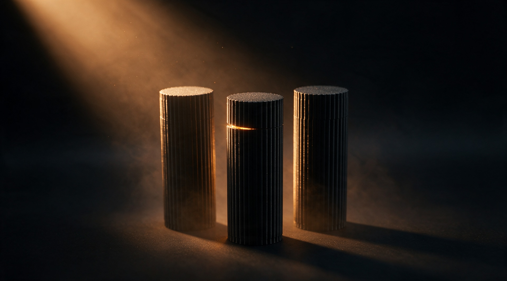

Über Kniff
Der erste Druck war ein Trichter für die Waschmaschine.
Ein kleines Team aus Berlin. Aus einem gelösten Alltagsproblem wurde ein Shop und 3D-Druck auf Anfrage.
Kniff ist ein kleines Team aus Berlin. Angefangen hat alles vor rund drei Jahren mit einem ziemlich alltäglichen Problem: Bei der Reinigung der Waschmaschine gab es kein passendes Gefäß, in das das schmutzige Wasser ablaufen konnte. Also wurde kurzerhand selbst eins gedruckt. Das war der erste Kontakt mit 3D-Druck, und der Moment, in dem klar wurde, wie viele kleine Alltagsprobleme sich mit einer eigenen Druckerei lösen lassen.
Aus ein paar gedruckten Kleinigkeiten für Freund:innen und Bekannte wurde mehr. Der Münzorganizer, einer der ersten eigenen Entwürfe, hat sich schon vor Kniff über eBay so gut verkauft, dass klar war: Da steckt mehr drin als ein Feierabend-Hobby.
Also ist daraus Kniff geworden, der Versuch, aus einzelnen guten Ideen einen kleinen, eigenen Shop zu bauen. Jedes Produkt entwerfen oder passen wir selbst an, drucken es in Deutschland und benutzen es tatsächlich selbst, bevor es online geht. Kein riesiges Sortiment, sondern eine überschaubare Auswahl an Dingen, die im eigenen Alltag wirklich etwas bringen.
Das Sortiment bleibt bewusst überschaubar: eine Handvoll Teile, die wir selbst benutzen. Wenn du Fragen, Wünsche oder eine eigene Idee für ein 3D-Druck-Projekt hast, schreib uns einfach. Wir schauen uns jede Anfrage persönlich an.